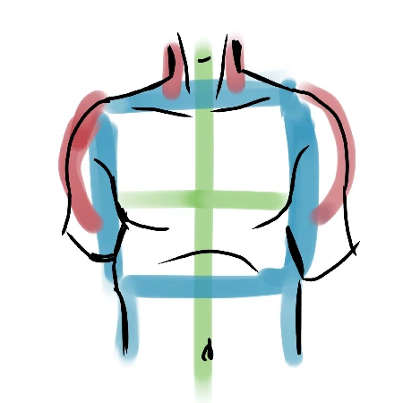
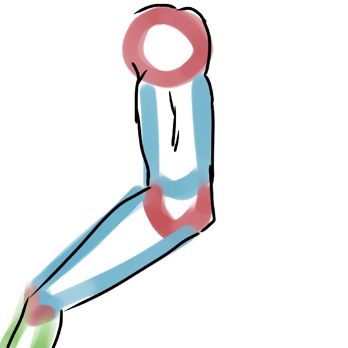

comment dessiner le haut du corps
Le haut du corps... La peur bleue
de beaucoup d'artistes car il y a
trop de muscles ! Mais finalement,
si je vous disais que le but était
juste de connaître sa géométrie,
vous me croiriez ou pas ? Et bien
pourtant, c'est bel et bien vrai,
et nous allons voir cette même
technique dans ce cours.
Avant tout, il faut que vous
appreniez à dessiner des carrés,
des ronds et des cylindres (pas de
formes complexes pour le moment
! ^^). Il vous faudra les
superposer, les coller et créer
tout plein de formes avec eux pour
pouvoir comprendre la suite.
Maintenant que vous avez les bases,
on peut commencer directement avec
le buste. Ce n'est ni plus ni moins
qu'un carré avec, pour les
épaules, deux demi-cercles
(ou cercles, si vous préférez,
c'est votre choix) attachés aux
deux extrémités du haut. Pour le
cou, on utilise un carré fin placé
à la verticale au milieu du côté
haut du carré principal.

Une fois que vous avez compris ça, vous pouvez faire des bustes de façon aisée sous tous les angles, même en perspective (bien que cela soit un peu plus compliqué car il faut alors se servir de cubes). Mais ne nous étalons pas, car il n'y a pas que le buste en haut du corps : il y a aussi les bras !

Les bras sont composés de cylindres et de ronds. Vous ne me croyez pas ? Voici un dessin ci-dessous qui prouve que c'est bien vrai !
Et voilà ! Vous voyez, rien n'est
plus simple que les bras une fois
bien décortiqués.
PETIT TIPS : Faites des studys pour
progresser sur le corps
Pour toute incompréhension du cours,
n'hésitez pas à m'en faire part
sur le serveur discord, dans le
salon dédié.